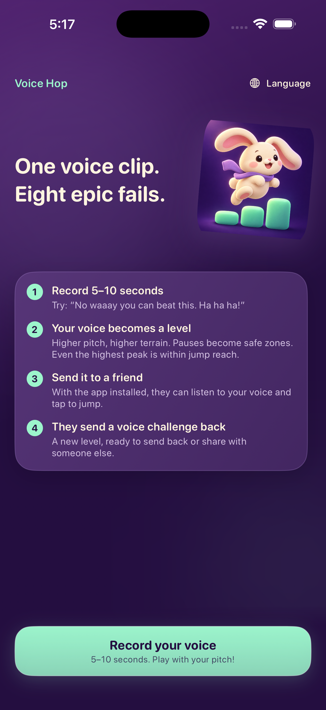
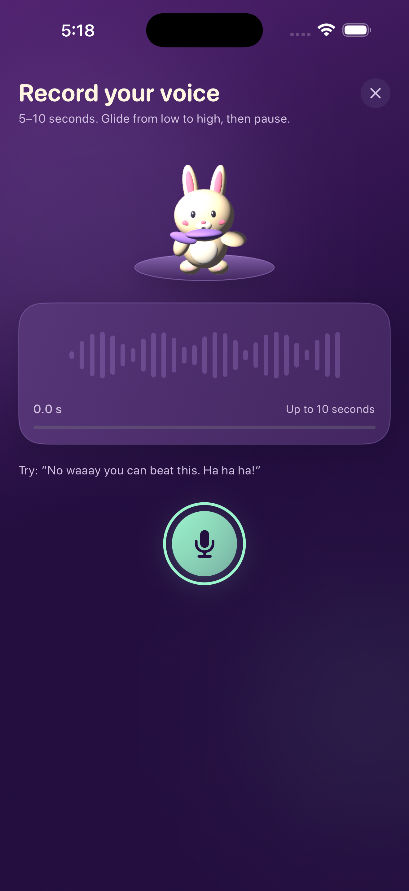
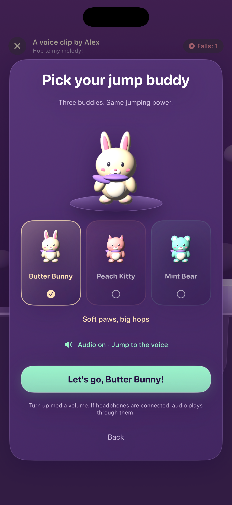

录一段声音
说话或哼唱 5–10 秒。改变音调，就能改变关卡形状。
IPHONE、IPAD 免费下载
说一句，跳过去，再发给朋友。
Voice Hop 把 5–10 秒录音变成跳跃地形：音调越高，地形越高；停顿带来喘息空间。闯关时还能听到刚才的原声。
1.0 版本无需账号，没有广告或 App 内购买项目。
看看声音怎么变成关卡
录音先生成地形。开跑后，同一段原声会随关卡播放。轻点小跳，按住大跳。
画面录自模拟器中的真实 App；使用合成测试语音，并仅为演示自动触发跳跃。屏幕录制文件本身没有声音。
三步开玩
说话或哼唱 5–10 秒。改变音调，就能改变关卡形状。
奶油兔、蜜桃猫、薄荷熊任你选。边听自己的录音边跳过它生成的地形。
通过 iOS 分享可玩的 .vchal 文件。朋友安装 Voice Hop 后就能打开；也可以分享只供观看的回放视频。



常见问题
不是。先录音，由声音生成关卡；再点击屏幕跳跃，同时听原录音。
只有创建新挑战时才需要麦克风。朋友发来的 .vchal 关卡可以直接玩。
通过 iOS 分享菜单发送原始 .vchal 文件。接收方需要安装 Voice Hop。回放视频只能看，不能作为关卡打开。
录音与关卡生成都在设备上完成。只有你主动用其他服务分享时，录音才会离开设备。
遇到问题请看帮助中心，或邮件联系 ydengeh@yahoo.com。